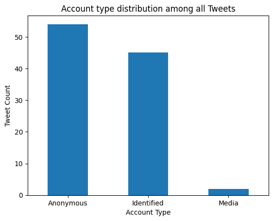
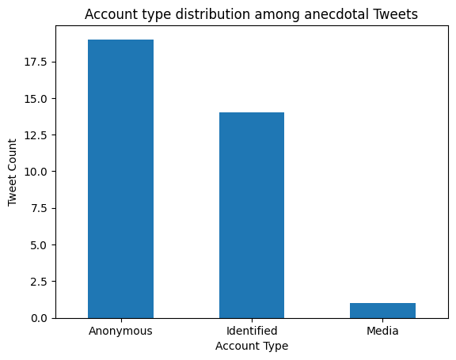
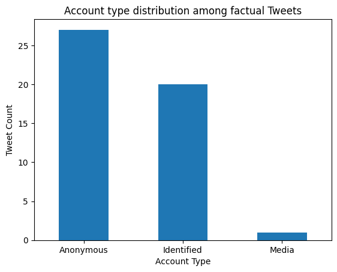

Question 4:
From whom did most of the anecdotal or factual Tweets come from?
We wanted what kind of Twitter personalities had anecdotal or factual themes in their Tweets. Firstly, we checked for the account type distribution among all Tweets using the following code:
ax = df['Account type'].value_counts().plot(kind='bar', rot=0, title='Account type distribution among all Tweets')
ax.set_xlabel("Account Type")
ax.set_ylabel("Tweet Count")
Below are the results. As you can see, it was mostly Anonymous accounts that Tweeted about Ivermectin as a cure for COVID, followed by Identified and Media account types.
Then, we checked for the account type distribution among anecdotal and factual Tweets using the following codes:
# Anecdotal Tweets
ax = df.loc[df['Theme'] == 0, 'Account type']
.value_counts().plot(kind='bar', rot=0, title=
'Account type distribution among anecdotal Tweets')
ax.set_xlabel("Account Type")
ax.set_ylabel("Tweet Count")
# Factual Tweets
ax = df.loc[df['Theme'] == 1, 'Account type']
.value_counts().plot(kind='bar', rot=0, title=
'Account type distribution among factual Tweets')
ax.set_xlabel("Account Type")
ax.set_ylabel("Tweet Count")
Below you can see the bar graph representation of the results. Their distributions are similar, wherein most of the Tweets came from Anonymous account types, followed by Identified and Media account types.
 